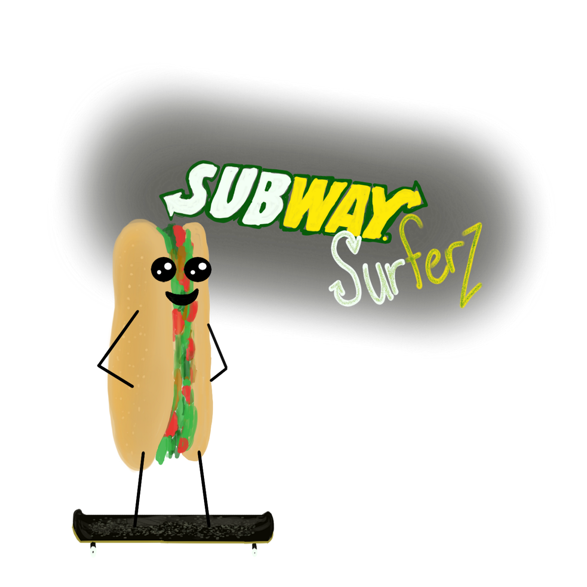
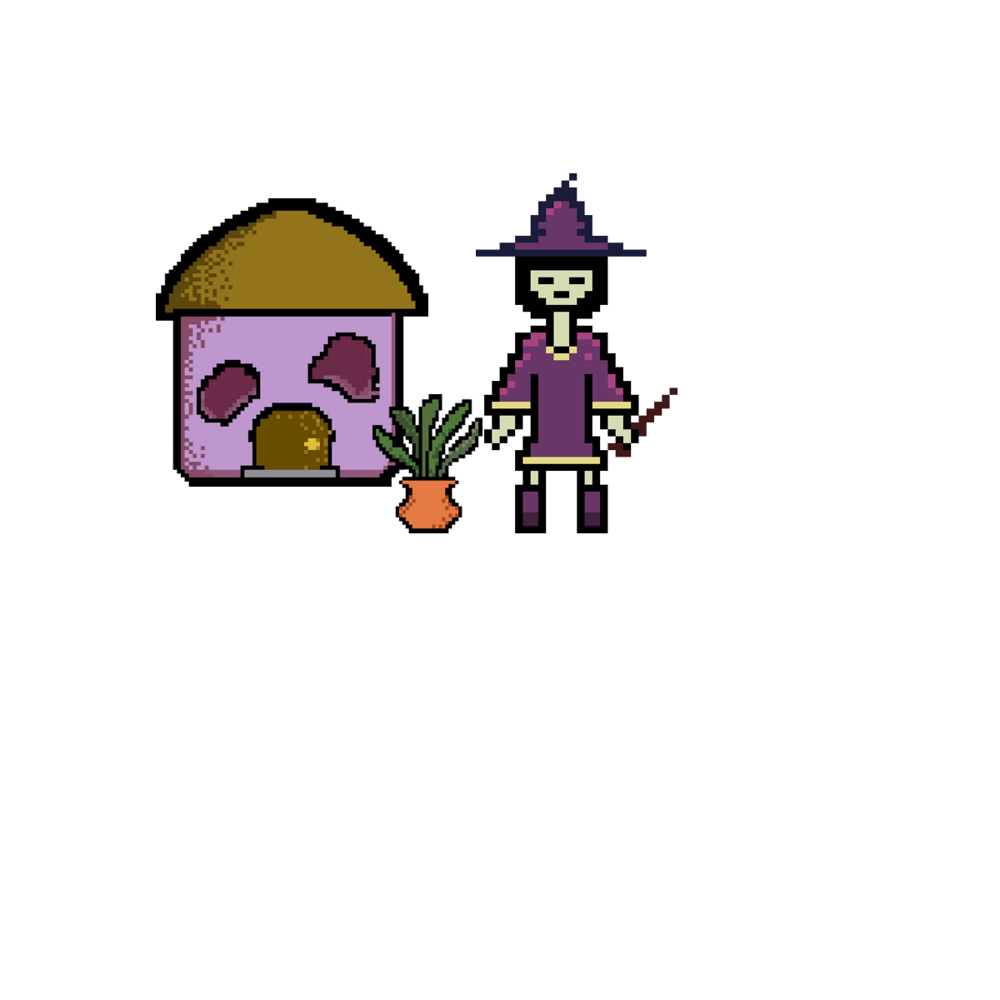
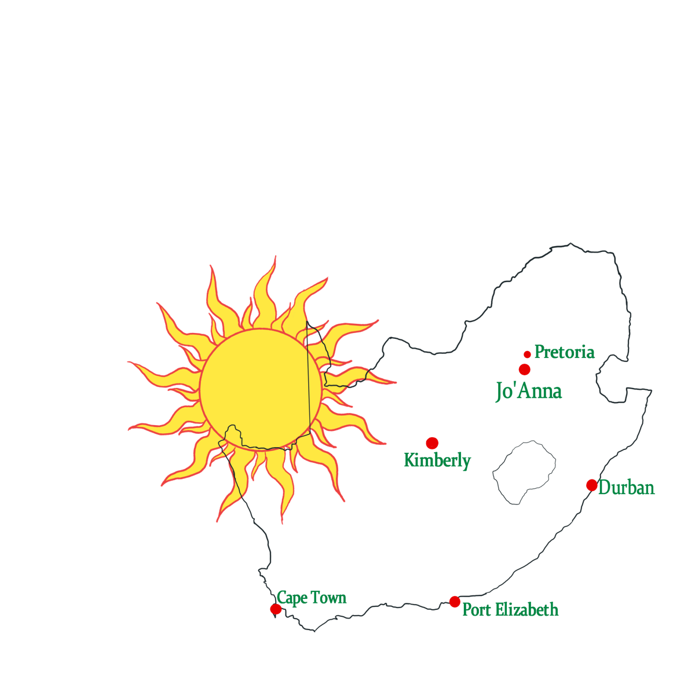
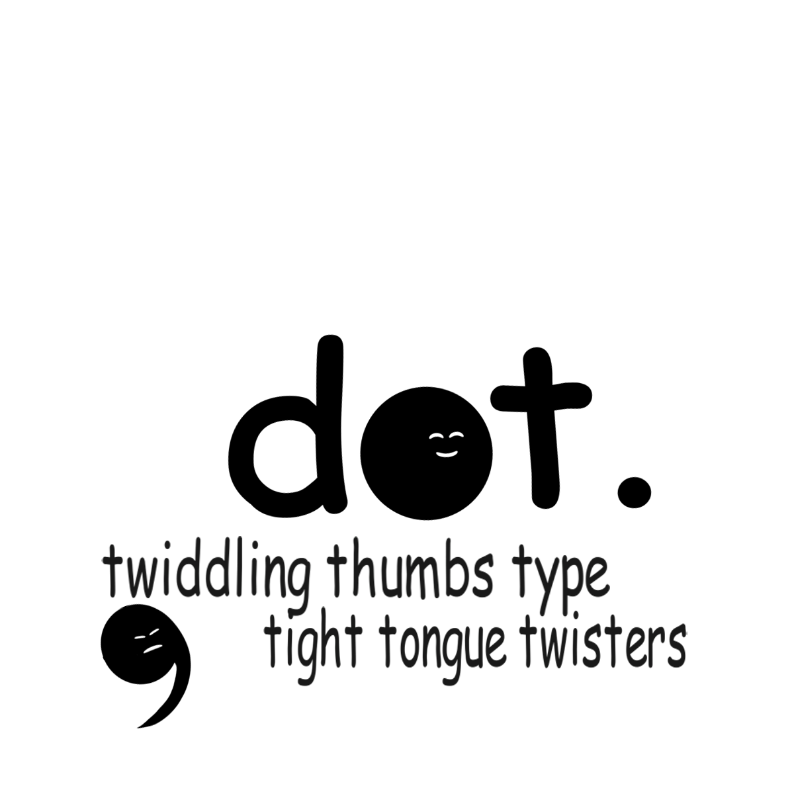

Quick review of all games and projects I have worked on. I describe the game play, characters, notable features I enjoyed coding, and what I focussed on for each game. Then at the end of each section, I highlight the greatest challenges and specific skills I learnt for that game in particular.
A game about a Subway sandwich attempting to escape a Subway. The game is named after the popular mobile game Subway Surfers, as both rely on procedural generation. I enjoy bringing humour into my games, and thus I chose this name and subject matter for my game, making it quite punny and light-hearted.
Challenges: The most challenging part of this game was definitely generating the tiled floor, as the timing and overlap had to be just perfect to make the transition seamless.
Skills Learnt: Spawning prefabs in general, procedural generation of flooring and backgrounds, speeding up the spawning of prefabs as the game goes on, creating the illusion of the game getting faster and making it get harder for the player.
My focus for this game was on the art and gamefeel. I worked with pixel-art for the first time ever and really enjoyed experimenting with colour palettes and attempting to tell a story with them. You play as a witches apprentice who has to take care of her plants whilst her and her partner are away on honeymoon. The plants run on a timer and I used visual cues to indicate them dying. Each time you water a plant, you get 'magic' which can be used to practice your potions skills.
Challenges: The most challenging part of this game was probably finishing all of the art in time and doing research into how games give visual clues to the player.This was done by changing colours of objects, or creating sprites with outlines.
Skills Learnt: Coding so the user can select tools, use them and unselect them, using a timer to change sprite colours and destroy objects
Easily one of my favourite games to create! We had to create a puzzle game based on African art. I interpreted this as not only visual art, but music as well. Each room was filled with clues that would indicate which popular song was the 'way out' and the player would have to ue the instruments to play the tune to unlock the door. I also used African visual art in the game as part of the clues.
Challenges: This was my first time using audio in actual gameplay instead of just in the background, so that was fun to learn about and challenging to code.
Skills Learnt: Programming objects to act as musical instruments when clicked in the appropriate places, puzzle creation, locking and unlocking doors (levels) with code. Also, I recorded all musical phrases myself which was an interesting learning experience.
For this game, we were given very little instruction. We were told to make a minimalistic game that has one core mechanic. I chose to do a typing game as I felt this was a clear mechanic and had the highest possibility to be minimalistic in design whilst not looking out of place. You play this game as Dot. Dot belongs at the end of a sentence, like a full stop. The user has to type the difficult sentence faster than the evil comma moves to be able to win and proceed to the next level. This is, of course, due to punctuation, and because they play as Dot.
Challenges: The core mechanic of typing (and typing correctly, at that) to move Dot was quite challenging and wsa a definite test to my abilities as a coder.
Skills Learnt: Getting correct letter input from the user to move a character in line with whichever letter was typed, how to design characters with minimalistic features yet still allow the user to see which character was antagonistic or when they were doing well.
